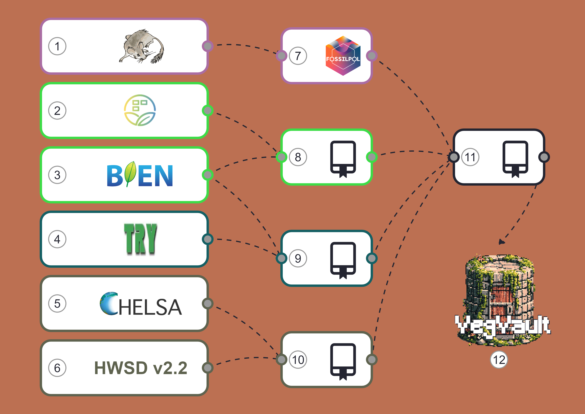

Published
August 7, 2025
Modified
November 26, 2026
Data Assembly Process of VegVault 2.0.0
VegVault v2.0.0 has been assembled through systematic integration of multiple publicly available databases, each contributing specialized data types to create a comprehensive vegetation database spanning both temporal and ecological dimensions. Each data source is processed in its own repository and released with a tag, and the database is built from these tagged files only.
The assembly workflow visualization:
Figure legend:
Primary data sources:
- Neotoma Paleoecology Database - Fossil pollen data (0-20,000 years BP)
- sPlotOpen - Contemporary vegetation plots
- BIEN - Contemporary vegetation and functional traits
- TRY Plant Trait Database - Comprehensive plant functional traits
- CHELSA - High-resolution climate data (contemporary and paleoclimate)
- Harmonized World Soil Database (HWSD) v2.2 - Global soil data (VegVault 1.0.0 named this source WoSIS)
Data Processing: Individual processing pipelines for each data type using specialized GitHub repositories
- VegVault-FOSSILPOL v2.0.0 - Fossil pollen data processing
- VegVault-Vegetation_data v2.0.0 - Contemporary vegetation processing
- VegVault-Trait_data v2.0.0 - Functional trait data processing
- VegVault-abiotic_data v2.0.0 - Environmental data processing
- VegVault v2.0.0 - Consolidation into unified SQLite database structure with key steps:
- Taxonomic Harmonization: Using the {taxospace} R package to align taxa with GBIF backbone
- Trait Categorization: Grouping traits into functional domains following Díaz et al. (2016)
- Spatial-Temporal Linking: Creating gridpoints for abiotic data and linking to vegetation samples
- VegVault database - The released SQLite database (see Database Access)
Reproducibility Through Version Control
All VegVault processing repositories use GitHub Tags to ensure complete reproducibility. For v2.0.0, every input file of the build is pinned by repository, tag, file name and SHA-256 checksum in Data/Producers/producer_manifest.yml, checked against its data specification before the build, and listed with its tag in the table BuildProducers of the database. The table version_control of the database records the build profile, the git commit of the code and the checksum of the pin manifest, enabling exact replication of the database assembly process.
Data Processing Details
Fossil Pollen Records
Fossil pollen records have been downloaded from the Neotoma Paleoecology Database using their API on 19th November 2026 (VegVault 1.0.0 used the download of 26th June 2023). All data acquisition and processing have been done using the FOSSILPOL: Workflow for processing and standardizing global paleoecological pollen data (version 1.0.0), with the settings of VegVault 1.0.0. This includes the selection of depositional environments, ecological groups, chronology control point types, and a minimum number of chronology control points to construct age-depth models. Individual samples and records have been filtered by age limits, number of pollen grains, maximum age interpolation, and number of valid levels. In addition, the accuracy of fossil pollen data is increased by re-estimating all age-depth models using the Bayesian probabilistic approach and including the information about individual age uncertainty. Age-depth models of VegVault 1.0.0 are reused for records whose chronology did not change since the 2023 download, and fitted again for the others.
Selection Criteria:
- Only records with type “pollen” with valid geological coordinates (longitude between -180 and 180, latitude between -90 and 90)
- Depositional environments: lakes, bogs, and mires only (selection table)
- Specific ecological groups retained (selection tables)
- Minimum 5 chronology control points (valid types)
Quality Filters:
- Minimum 125 pollen grains per sample (balanced for data retention vs. quality)
- While the preferred minimum was initially set at 150, this threshold resulted in significant data loss
- Threshold adjusted to 125 with condition that less than 75% of samples would have low pollen sum
- Age limits: 0-20,000 cal yr BP
- Exclusion of samples older than 3000 years of the last chronology control point
- Minimum 5 samples per record
- Re-calculated age-depth models using Bayesian approach {Bchron} package
Processing Details: Available at VegVault-FOSSILPOL
Contemporary Vegetation Plots
The primary sources of contemporary plot-based vegetation data are BIEN (Botanical Information and Ecology Network) and sPlotOpen (the open-access version of sPlot).
BIEN Processing:
- Downloaded using {BIEN} R package v1.2.8 on 20th November 2026 from BIEN database 4.2.8, the database version of VegVault 1.0.0, using function
BIEN::BIEN_plot_datasource() - Retained key columns:
datasource_id,datasource,plot_name,sampling_protocol,methodology_reference,methodology_description,longitude,latitude,plot_area_ha,subplot,individual_count,family_matched,name_matched,name_matched_author,verbatim_family,verbatim_scientific_name,scrubbed_species_binomial,scrubbed_taxonomic_status,scrubbed_family,scrubbed_author - All columns renamed using snake case
- Filtered out records with missing essential information (NA values in
datasource_id,datasource,plot_name,longitude,latitude, and/orplot_area_ha) - Records of one taxon (
name_matched) in a plot merged into one record, with their individual counts added - Only the latest survey kept for plots surveyed more than once
- One row per plot, with a stable plot identifier
plot_id
sPlotOpen Processing:
- sPlotOpen v2.0, downloaded on 26th September 2023 for VegVault 1.0.0 and kept, as no newer open release exists
- Linked tables
DT2.oaandheader.oaviaPlotObservationIDcolumn - Applied quality filters for geographic and area data (filtered out rows with NA values in
PlotObservationID,GIVD_ID,Longitude,Latitude, and/orReleve_area) - Records without a species name dropped, and records of one species in a plot merged into one record
- All columns renamed using snake case
Processing Details: Available at VegVault-Vegetation_data
Functional Traits
Following Díaz et al. (2016), we selected six key functional traits representing:
Stem specific densityLeaf nitrogen content per unit massDiaspore massPlant heightLeaf areaLeaf mass per area
TRY Database Processing:
- Data request ID:
28498on 29th August 2023, the request of VegVault 1.0.0 (no new request was made) - Requested traits with codes:
3106,4,3108,3110,3112,3114,3116,3117,14, and26(closest to Díaz et al. 2016 description) - The request file is read with the same settings as
rtry::rtry_import() - For each trait (
TraitID), extracted all relevant observations (ObservationID), ensuring only observations unique to each trait - Identified all unique data (
DataID) associated with each trait - Excluded non-meaningful trait variations (DataID:
2221,2222,2223,2224,2225,3646,3647,3698,3699,3727,3728,3730,3731,3849,3850,4029, and4030), e.g.,height at 15 days - Extracted covariate information (additional data stored in
DataNamecolumn) - Trait values taken from TRY’s standardised values (
StdValue) - Removed records that TRY flags as copies of another record, and repeated values of one trait within one observation
- Impossible, unparsable or incomplete coordinates set to missing
- All columns renamed using snake case
- Added
Trait Domainvariable to group traits following Díaz et al. (2016) selection for efficient extraction across TRY and BIEN
BIEN Traits Processing:
- Downloaded using {BIEN} R package v1.2.8 on 19th November 2026 from BIEN database 4.2.8, using function
BIEN::BIEN_trait_trait() - Requested traits:
whole plant height,stem wood density,leaf area,leaf area per leaf dry mass,leaf nitrogen content per leaf dry mass, andseed mass - Retained columns:
trait_name,trait_value,unit,id,longitude,latitude,method,url_source,source_citation,project_pi,scrubbed_species_binomial, andaccess - Removed records from sources that copy a compilation held by TRY and match a published TRY record (the TRY copy is kept)
Units and quality checks (both providers):
- Every value converted to the single unit of its trait domain by a registered and versioned rule; values whose unit is not registered, or whose conversion fails, are not published
leaf mass per areaderived from specific leaf area (leaf area per leaf dry mass) as 1/value, after the specific leaf area is converted to a known unit- Values from sources whose scale is physically implausible not published
Processing Details: Available at VegVault-Trait_data
Abiotic Environmental Data
The primary sources of abiotic data are CHELSA, CHELSA-TRACE21, and the Harmonized World Soil Database (HWSD) v2.2. The first two data sources provide high-resolution downscaled climatic data, while the latter offers detailed soil information (only available for contemporary data). VegVault 1.0.0 used HWSD v2.0 or v2.01 (the exact version was not recorded) and named it WoSIS or SoilGrids.
CHELSA Climate Data:
- Contemporary: CHELSA v2.1, all seven files downloaded on 20th November 2026 (VegVault 1.0.0: 8th September 2023)
- Used {ClimDatDownloadR} R package with function
ClimDatDownloadR::Chelsa.Clim.download() - Selected bio-variables:
1,4,6,12,15,18,19 - Spatial aggregation: 25x factor using median values with {terra} R package function
terra::aggregate(factor = 25, fun = "median") bio4(temperature seasonality) in hundredths of a degree Celsius; in VegVault 1.0.0 it was 0 south of about 65.7° N because of a truncated download- A
bio12value of 6553.5 is the storage limit of CHELSA V2.1, so it is a lower bound
Paleoclimate: CHELSA-TRACE21
- Paleoclimate: CHELSA-TRACE21 v1.0, the files downloaded on 31st December 2023 for VegVault 1.0.0, with
bio15at age 0 downloaded again on 20th November 2026 (in VegVault 1.0.0 it was 0 south of 14.65° S because of a truncated download) - Downloaded values for each 500-year time-slice between 0 and 18,000 years before present (BP)
- Selected bio-variables:
1,4,6,12,15,18,19 - For each time slice, applied spatial aggregation using
terra::aggregate(factor = 25, fun = "median") - Inflated precipitation of the source in 25° S to 5° N and 80° W to 35° W, at 12,000, 12,500 and 15,000 to 18,000 years, masked: there,
bio12,bio15,bio18andbio19have no value - Precipitation stored in whole kg m-2, so a quarter with less than 0.5 kg m-2 is 0
HWSD Soil Data:
- HWSD v2.2 downloaded on 20th November 2026 (both
hwsd2.2_raster.zipandhwsd2.2_db.zip); VegVault 1.0.0 used HWSD v2.0 or v2.01, downloaded on 11th September 2023 - Soil groups: the WRB 2022 Reference Soil Group of each cell, coded 1 to 32 in alphabetical order; a cell whose dominant class is not a soil (glaciers, open water) has no value
- The soil codes of VegVault 1.0.0 came from a wrong lookup and cannot be compared with those of v2.0.0
- Resampled using
terra::resample(method = "near")function to match climate data resolution - Provides essential edaphic context for vegetation-environment relationships (contemporary data only)
Processing Details: Available at VegVault-abiotic_data
Data Integration Procedures
All processing pipelines with their corresponding Tags are migrated into an SQLite database using the GitHub repository titled VegVault, which can be accessed as DOI: 10.5281/zenodo.14777447 (all versions). The build is a {targets} pipeline in six stages: import of the pinned files, links between samples and gridpoints, assembly of the database, validation, export of the flat files, and the figures of the data paper.
Data Migration Details
Migrating sPlotOpen vegetation data:
- Dataset name (
dataset_name) created fromplot_observation_idassplot_[plot_observation_id] - Original data source from column
givd_idstored inDatasetSourcesIDtable - Sample name (
sample_name) created usingplot_observation_idassplot_[plot_observation_id] - Sample Size (
sample_size) created fromreleve_areacolumn - All samples automatically assigned age of 0
- Taxonomic names extracted from
Speciescolumn, abundances fromOriginal_abundance; records without a species name are not stored
Migrating BIEN vegetation data:
- Dataset name (
dataset_name) created from the plot identifier asbien_[plot_id](VegVault 1.0.0 used the row number of the file, which changes when rows are added or reordered) - Original data source from column
datasourcestored inDatasetSourcesIDtable - Sampling method extracted from
methodology_descriptioncolumn - Sample name (
sample_name) created asbien_[plot_id] - Sample Size (
sample_size) created fromplot_area_hacolumn, multiplied by 10,000 (stored in square meters) - All samples automatically assigned age of 0
- Taxonomic names extracted from
name_matchedcolumn
Migrating fossil pollen data:
- Dataset name (
dataset_name) created from the Neotoma dataset identifier asfossilpol_[dataset_id] - Note: the Neotoma
dataset_idin the name is not thedataset_idof the VegVault tableDatasets, which is numbered anew in every build - Original data source from
source_of_datacolumn stored inDatasetSourcesIDtable - Sampling method extracted from
depositionalenvironmentcolumn - Individual Dataset Reference extracted from
doicolumn - Sample name (
sample_name) created from the Neotoma identifiers of the dataset and the sample asfossilpol_[dataset_id]_[sample_id](VegVault 1.0.0 used the database identifier of the dataset here, so sample names changed with every build) - Ages extracted from
levelscolumn - Age uncertainty from age-depth models extracted from
age_uncertaintycolumn - Taxonomic names and abundances extracted from
counts_harmonisedcolumn; a taxon is stored for a sample only when its count is above zero
Migrating TRY functional traits:
- Dataset name (
dataset_name) created astry_[number]: one dataset per combination of data source, longitude, latitude and reference, numbered in the order of these values (VegVault 1.0.0 numbered them in the order of the file) - Original data source from column
datasetstored inDatasetSourcesIDtable - Individual Dataset Reference extracted from
reference_sourcecolumn - Sample name (
sample_name) created from the TRY observation astry_[observation_id] - Individual Sample references extracted from
dataset_reference_citationandrecord_reference(the publication of each TRY record) - All samples automatically assigned age of 0
- Trait names extracted from
trait_full_name, taxonomic names fromacc_species_name, trait values fromtrait_value, with their unit and conversion rule
Migrating BIEN functional traits:
- Dataset name (
dataset_name) created asbien_traits_[number], by the same rule as for TRY - Original data source from column
project_pistored inDatasetSourcesIDtable - Individual Dataset Reference extracted from
source_citationcolumn - Sample name (
sample_name) created using columnidasbien_traits_[id] - All samples automatically assigned age of 0
- Trait names extracted from
trait_full_name, taxonomic names fromscrubbed_species_binomial, trait values fromtrait_value, with their unit and conversion rule
Final Database Integration Procedures
In addition to the consolidation of all processed data into a unified SQLite database, the final VegVault migration repository performs three critical procedures to ensure data consistency and usability:
(i) Taxonomic Classification
As VegVault integrates data on taxa from various sources, the {taxospace} R package is used to classify diverse taxa into a unifying taxonomic backbone. The {taxospace} tool automatically aligns taxon names with the GBIF taxonomical backbone. Specifically, we find the best match of raw taxon names using the Global Names Verifier, which is then aligned with GBIF. Only plant taxa count, each name is sent with only its first letter in capitals, and when a name matches several taxa equally well, the taxon with the smallest GBIF identifier is used. The resulting taxonomic classification information, detailed up to the family level, is stored for each taxon, ensuring consistency and facilitating comparative analyses across different datasets.
Two kinds of names are corrected by hand after the automatic classification. Fossil pollen types that combine two or more taxa (such as the Neotoma name “Betula/Carpinus”, stored as “Betula Carpinus”) keep only what their parts share: the family when all parts belong to one family, and no classification otherwise. The pollen type “Pinus Picea” is classified as the family Pinaceae, the family of both genera, instead of Abies alba, to which the automatic matching resolves it.
Important limitations: Taxonomic classification down to the species level is not available for each taxon (e.g., some fossil pollen types can only be identified to the genus or family level). For several taxa, no matching classification could be found. Note that taxonomic classification is additional information—the original taxon name is always present and returned by default. Finally, users should be aware that this classification is an automated process and may contain errors.
(ii) Grouping of Traits into Trait Domains
As there are differences in trait names across data sources (e.g., “Leaf nitrogen (N) content per leaf dry mass” vs. “leaf nitrogen content per leaf dry mass”), we added a new variable Trait Domain that groups traits together following the trait selection of Díaz et al. (2016). For example, trait Plant height vegetative from TRY and trait whole plant height from BIEN are both grouped under the Trait Domain stored as Plant heigh, the spelling of VegVault 1.0.0. This grouping serves as an efficient mechanism for extracting comparable traits across both TRY and BIEN datasets. Every trait value is stored in the unit of its Trait Domain, together with the rule that converted it.
(iii) Creation of Gridpoints for Abiotic Data
We developed a data structure that provides readily available environmental context for each vegetation (and trait) record by creating spatio-temporal links between these records and abiotic information. As raster data are not suitable for storage in an SQLite database, we created artificial points, called ‘gridpoints’, located in the center of each raster cell. This resulted in a uniform spatio-temporal matrix of gridpoints holding the abiotic information.
Gridpoint naming conventions: dataset_name are created as “geo_[longitude][latitude]” and sample_name are created as ”geo[longitude][latitude][age]”.
Spatial-temporal linking: We linked gridpoints with every other non-gridpoint Sample (vegetation_plot, fossil_pollen_archive, and traits) that lies at most 50 km and at most 5,000 years from it, and discarded the gridpoint Samples without such a link. The distance is the geodesic distance on the WGS84 ellipsoid; the distance and the age difference are stored truncated to whole kilometres and years. Since v2.0.0 the rule is applied exactly: VegVault 1.0.0 searched only within one degree of longitude and did not wrap at the dateline, so it missed the links at high latitudes, where 50 km is more than one degree of longitude, and across the dateline. The links are computed and stored once per position, a distinct combination of longitude, latitude and age (tables Positions, SamplePosition and PositionLink), and the view AbioticDataReference returns them per sample, as the table of the same name did in VegVault 1.0.0.
Related Resources
- Database Content - Overview of available data
- Database Structure - Technical database schema
- Database Access - Download and setup instructions
- Usage Examples - Practical applications
- Materials & Outputs - Publications and resources